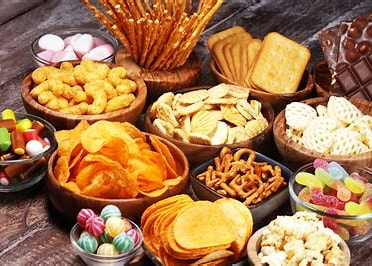
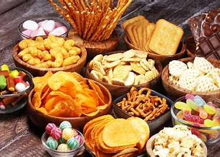

Sri Rengavilas Tea & Coffee Bar is a charming café located in the heart of the city, known for its cozy ambiance and delightful beverages. Established in 1995, it has become a favorite spot for locals and tourists alike to unwind and enjoy a cup of expertly brewed tea or coffee. The café prides itself on using high-quality ingredients and traditional brewing methods to create a memorable experience for its patrons. Whether you're looking for a quiet place to read a book or catch up with friends, Sri Rengavilas Tea & Coffee Bar offers the perfect setting.
Items available


 
